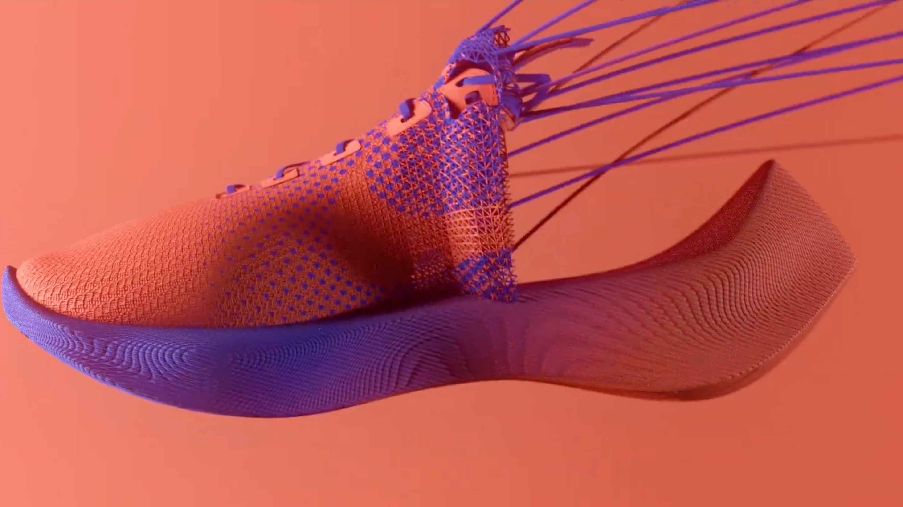
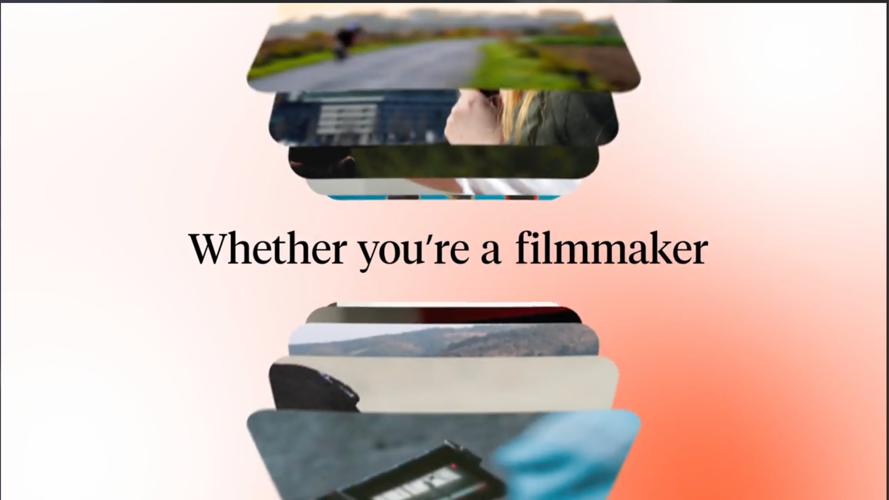
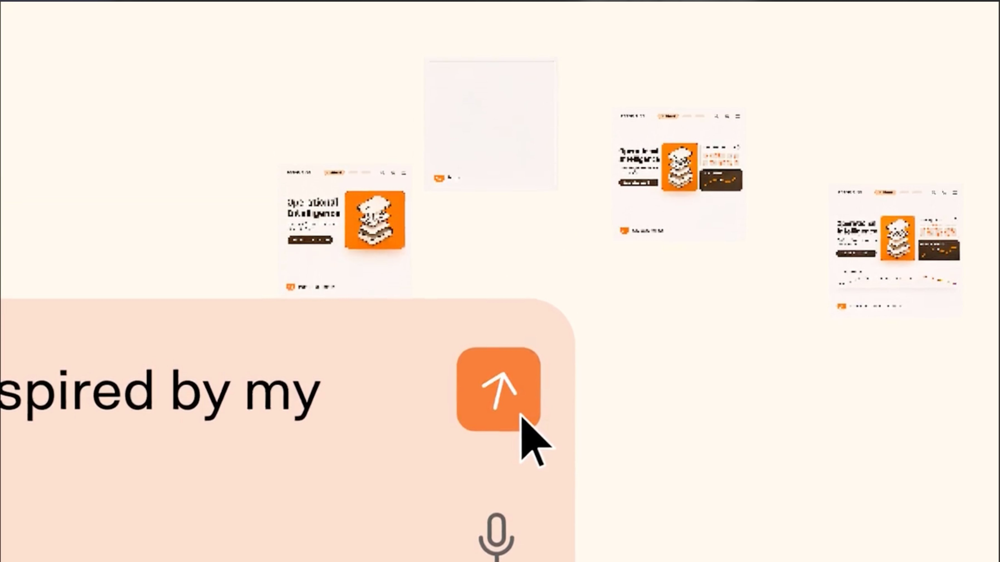
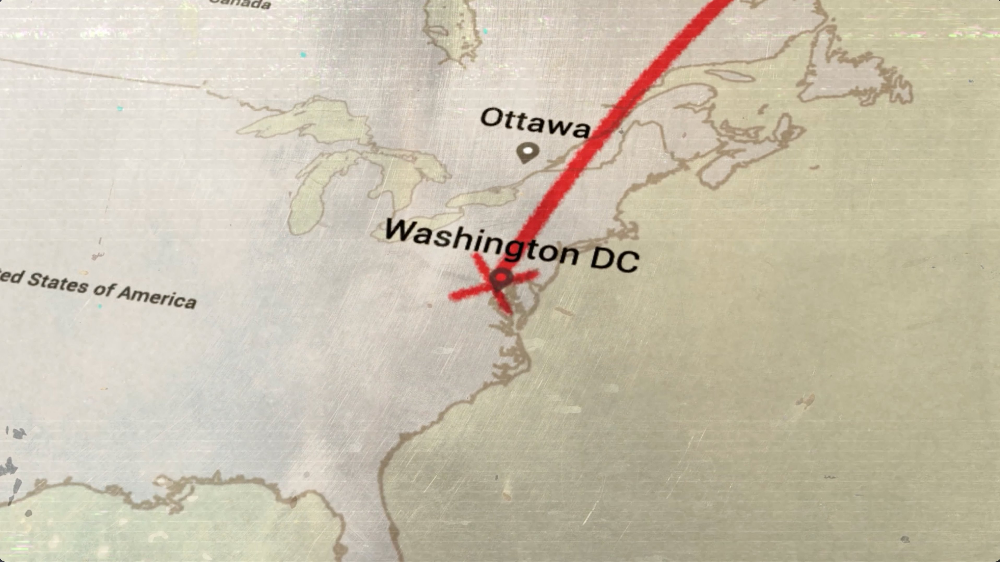
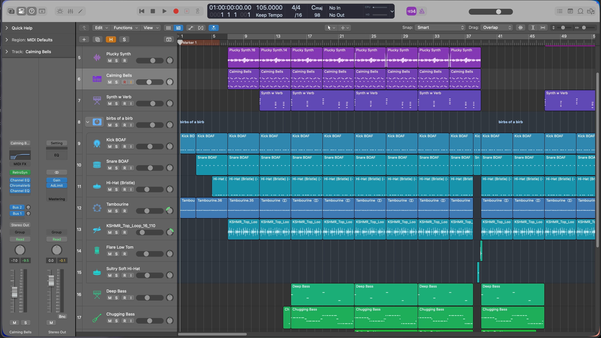

2+ Yrs
Commercial ProductionIndependent motion and sound designer delivering end-to-end visual & sonic post-production.
Hi, I'm a 2D & 3D Motion Designer specializing in Sound Design. With 2+ years of commercial freelance production experience, I combine tactile 2D visuals and AI-assisted 3D workflows with cinematic sound design—paired with digital business strategy from IIM Bangalore.
Independent motion and sound designer delivering end-to-end visual & sonic post-production.
Contract Junior Motion Designer crafting kinetic typography and studio-aligned visual sequences.
Trained through School of Motion, Ben Marriott, and CalArts Graphic Design Specialization.
Digital Business & Entrepreneurship at IIM Bangalore · Grade 12 ISC · 96.4% Grade 10 ICSE.
Over the past two years, I have worked professionally and independently as a motion and sound designer—delivering end-to-end visual and sonic post-production for commercial campaigns, SaaS launches, and documentary films.
Having interned as a Junior Motion Designer at Netflix on contract and trained through School of Motion, Ben Marriott, and CalArts, I approach motion and audio as a single cohesive system—pairing After Effects and Cinema 4D visuals with custom score and foley in Logic Pro.





| Core Skill | Primary Applications | Deliverables |
|---|---|---|
| 2D Motion Design | After Effects | Kinetic typography, brand animations, SaaS launch films |
| Sound Design | Logic Pro | Custom foley, spatial transitions, trailer & UI sound effects |
| AI-Assisted 3D Modelling | Cinema 4D, Blender | 3D product visualization, shaders, lighting, camera rigs |
| Video Editing | Premiere Pro | Commercial cuts, 2D documentary pacing, color grading |
| Music Production & Mixing | Logic Pro | Original score, vocal arrangement, multi-track mixing |
| Brand & UI/UX Design | Figma, Framer | Design systems, interactive prototypes, web layouts |
Independent commercial practice delivering end-to-end 2D/3D motion graphics, SaaS explainers, documentary edits, and custom audio mixes.
Produced motion graphics sequences, kinetic typography, and promotional assets under studio brand standards and rapid turnaround schedules.
Managed FM radio translation frequencies and receiver equipment distribution for an 18,000-person live Isha Foundation event.
2D & 3D Motion Designer Specializing in Sound Design
DELHI NCR, India · theomarkartik@gmail.com · github.com/Kartik-Omar
2D & 3D Motion Designer specializing in Sound Design with 2+ years of commercial freelance production experience and contract internship experience at Netflix. Combines tactile 2D motion, AI-assisted 3D visuals, and cinematic audio mixing with digital business strategy from IIM Bangalore.
2D/3D motion reels, SaaS launch videos, sound design, music mixes, and Figma/Framer UI systems.
Yes—motion and audio are built together from day one using After Effects, Cinema 4D, and Logic Pro.
Send your brief below via the "Let's Talk Form" or email me at: theomarkartik@gmail.com
Concept & storyboard → 2D/3D motion look-dev → custom foley & score mix → final master delivery.
Your project goal, target timeline, brand assets (if any), and reference mood.